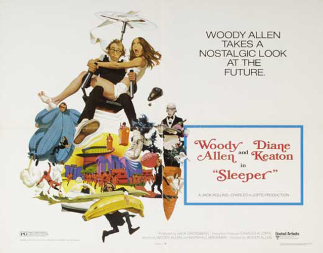
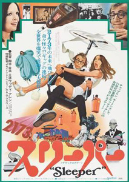
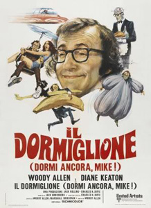
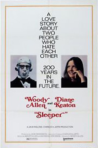
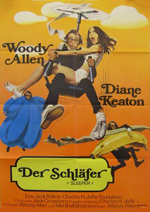

Miles Monroe (Woody Allen), a jazz musician and owner of the "Happy Carrot" health-food store in 1973, is subjected to cryopreservation without his consent and not revived for 200 years. The scientists who revive him are members of a rebellion: 22nd-century America seems to be a police state, ruled by a dictator about to implement a secret plan known as the "Aries Project". The rebels hope to use Miles as a spy to infiltrate this because he is the only member of this society without a known biometric identity. The film contains many elements which parody notable works of science fiction.
The film was shot in and around Denver, Colorado. The outdoor shots of the hospital were filmed at the Table Mesa Laboratory of the National Center for Atmospheric Research in Boulder, Colorado. There is also a cameo appearance of the main building of the Denver Botanic Gardens and of the signature concrete lamp posts. The Sculptured House, designed by architect Charles Deaton, is a private home known locally since the film was shot as the "Sleeper House" located on Genesee Mountain near Genesee Park, west of Denver (on the market in 2006 for $7.95 million). The Mile Hi Church of Religious Science in Lakewood, Colorado was turned into a futuristic McDonald's, featuring a sign counting the number sold: 795 followed by 51 zeros.
Luna asks Miles if there is anything he does believe in, and he responds with the line, "Sex and death - two things that come once in a lifetime - but at least after death you're not nauseous."
Original Music by Woody Allen with the Preservation Hall Jazz Band & the New Orleans Funeral Ragtime Orchestra.
"Sleeper is the closest Allen has come to classic slapstick-and-chase comedy, and he's good at it." - Roger Ebert : Chicago Sun-Times
"Pound for pound and minute for minute, Sleeper may just have more laughs in it than any other Woody Allen movie." - Filmcritic.com



